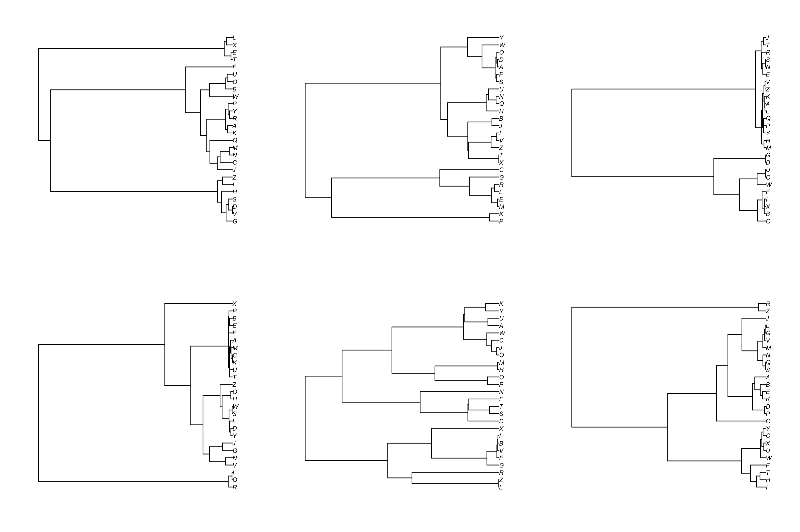
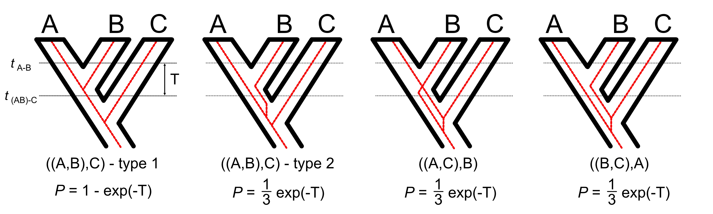

Coalescent trees
- The coalescent in a single population gives rise to different gene trees across loci.
- Deep splits can arise but they split the taxa randomly from one gene to the next.

The multispecies coalescent
If you sample one individual from each of three species, and consider the genealogy of a single
gene, there are four possible ways that those genes could be related to each other:

Source https://commons.wikimedia.org/wiki/File:Multispecies_coalescent.jpg